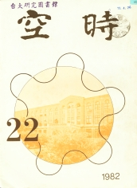

《時空》第二十二期
目錄
編者的話
3
會長的話
施銘賢
6
訪王亢沛老師
葉震南
8
訪葉伯琦老師
施銘賢
10
學會一年—瑣記
郭子文
15
茶會 茶會
20
物理欣賞系列始末
21
中子源事件報告
22
一個構想
李振瀚
24
師生之間
林 雨
26
我的話
劉為先
28
給新生
寶
31
雲霧室簡介
葉正容
34
微處理機發展史
高甫仁譯
38
偶對的不守恆
王瑜君譯
43
交際物理之定性分析
高怡宣
48
磁單極與物理的幾何化
趙敦華
49
來函照登
56
系友來鴻
57
通訊錄
69

出版者：台大物理學會
印刷廠：立人打字印刷公司
出版日期：民國七十一年十月二十五日
台大訓導處登記第209號